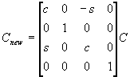

#include <nitro/gx/g3_util.h>void G3_RotY(fx32 s, fx32 c);| s | Sine of the angle of rotation |
| c | Cosine of the angle of rotation |
None.
This function premultiplies the current matrix with the rotation matrix for the y-axis. If the current matrix is C, then the new matrix, Cnew, is in the format shown below.

01/19/2004 Initial version
CONFIDENTIAL